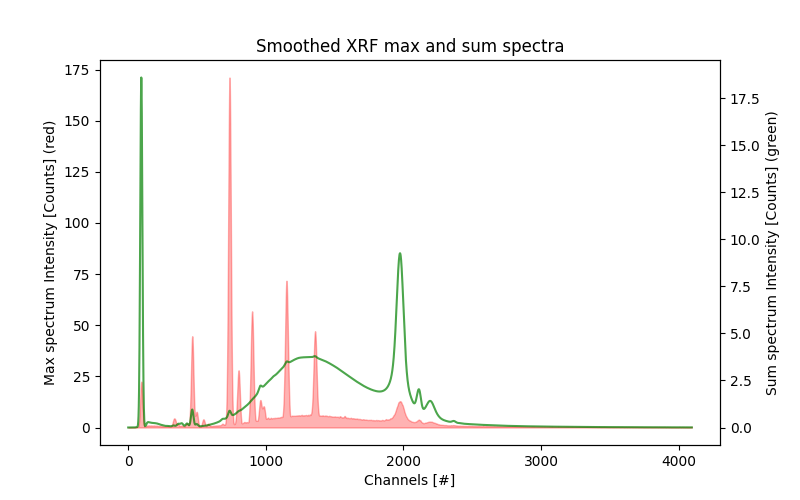

from maxrf4u import raw_to_datastack, treeStorage
Macro-X-Ray-Fluorescence (MA-XRF) data typically do not fit into memory. In order to make optimal use of your computer memory and multi-core processors it is therefore necessary to convert such spectral data into a chunked analysis ready file format. The maxrf4u package makes use of a specially developed .datastack file format.
In all of the data processing below we will store both the raw data and the results of further computations on disk in a .datastack file. The file format is based on the ZipStore file format of the zarr python package.
Creating a .datastack file to do out-of-memory calculations
In this example below we show how to convert a MA-XRF dataset consisting of a .raw data cube file (and an .rpl shape file) into a .datastack file. During conversion the maxrf4u.raw_to_datastack() function performs a Gaussian smoothing of each spectrum. Also the max and sum spectra are computed and stored.
On my laptop this initial conversion of a 21 Gb dataset takes 7:11 minutes.
raw_to_datastack('RP-T-1898-A-3689.raw', 'RP-T-1898-A-3689.rpl')Writing: RP-T-1898-A-3689.datastack...
[########################################] | 100% Completed | 4min 21.8s
Computing max spectrum...
[########################################] | 100% Completed | 1min 18.6s
Computing sum spectrum...
[########################################] | 100% Completed | 1min 18.2sIt is now possible to check the content (i.e. the datasets) of the .datastack file with the tree() function.
tree('RP-T-1898-A-3689.datastack')RP-T-1898-A-3689.datastack:
/
├── maxrf_cube (1692, 1592, 4096) float32
├── maxrf_maxspectrum (4096,) float32
└── maxrf_sumspectrum (4096,) float64With the show_arrays=True option the tree() function also shows the shapes and chunk sizes of the individual datasets. For example, the maxrf_cube dataset contains 1692 x 1592 spectra with 4096 channels each.
tree('RP-T-1898-A-3689.datastack', show_arrays=True)RP-T-1898-A-3689.datastack:
/
├── maxrf_cube (1692, 1592, 4096) float32
├── maxrf_maxspectrum (4096,) float32
└── maxrf_sumspectrum (4096,) float64
- Dataset: maxrf_cube
- Dataset: maxrf_maxspectrum
- Dataset: maxrf_sumspectrum
|
![]() |
|
![]() |
|
|
With the freshly created .datastack file it is now possible to explore and process the data. Let’s start this exploration by plotting numpy arrays that are returned by the .read(<datapath>) methods. The max and sum spectra provide a good summary of the spectral data. The horizontal axis shows the detector channel numbers. Note that inconveniently the data does not provide an energy calibration yet.
from maxrf4u import DataStackds = DataStack('RP-T-1898-A-3689.datastack')import matplotlib.pyplot as plt
import numpy as npy_max = ds.read('maxrf_maxspectrum')
y_sum = ds.read('maxrf_sumspectrum')
fig, ax = plt.subplots(figsize=[8, 5])
ax2 = ax.twinx()
ax.fill_between(np.arange(len(y_max)), y_max, color='r', alpha=0.3)
ax2.plot(y_sum, color='g', alpha=0.7)
ax.set_title('Smoothed XRF max and sum spectra')
ax.set_xlabel('Channels [#]')
ax.set_ylabel('Max spectrum Intensity [Counts] (red)')
ax2.set_ylabel('Sum spectrum Intensity [Counts] (green)');
..

Appending and reading arrays and ragged lists
In the code above a new .datastack file was created to store the converted MA-XRF data and further computations. If these computed results are shaped as a regular array one can use the append() function and DataStack.read() method for writing to and reading from the .datastack file.
However, we will also come across situations in which we want to store and read irregular (ragged) lists of lists. In these cases one needs to make use of the append_list() function and the DataStack.read_list() method.
Here is a small example to demonstrate this functionality.
from maxrf4u import append_list, DataStack# write
my_test_ragged_list = [[1, 2], [3, 5, 7], [1]]
append_list(my_test_ragged_list, 'test_list', 'RP-T-1898-A-3689.datastack')
# and read
ds = DataStack('RP-T-1898-A-3689.datastack')
ds.read_list('test_list')[[1, 2], [3, 5, 7], [1]]FUNCTIONS
DataStack
DataStack (datastack_file, mode='r', verbose=False, show_arrays=True)
Initialize DataStack object from datastack_file.
max_and_sum_spectra
max_and_sum_spectra (datastack_file, datapath='maxrf_cube')
Compute sum spectrum and max spectrum for ‘maxrf’ dataset in datastack_file.
Returns: y_sum, y_max
repack
repack (datastack_file, select='all', overwrite=True, verbose=False)
Repack datastack_file by deleting and renaming all but latest datasets.
Automatic selection of latest datasets can be overriden be providing list of select datasets
append_list
append_list (ragged_list, datapath, datastack_file, nan=-9999)
Wrapper around append() to store iregular (ragged) lists of lists as regular padded arrays.
Currently only working for two dimensional lists of integers. Padding is done with nan=-9999.
append
append (arr, datapath, datastack_file)
Add numpy or dask array arr to datastack_file in folder datapath.
underscorify
underscorify (datapath, datapath_list, extra_underscore=True)
Append extra underscore if datapath exists to prevent overwriting.
If extra_underscore=False return (latest) datapath with most underscores
tree
tree (datastack_file, show_arrays=False)
Prints content tree of datastack_file
raw_to_datastack
raw_to_datastack (raw_file, rpl_file, datastack_file=None, datapath='maxrf_cube', verbose=True)
Convert Bruker Macro XRF (.raw) data file raw_filename and (.rpl) shape file rpl_filename.
into a Zarr Zipstore datastack file (.datastack).
Layers
Layers ()
Initialize self. See help(type(self)) for accurate signature.